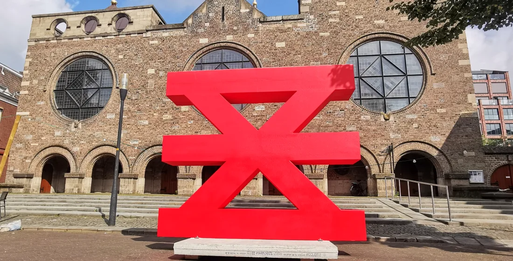
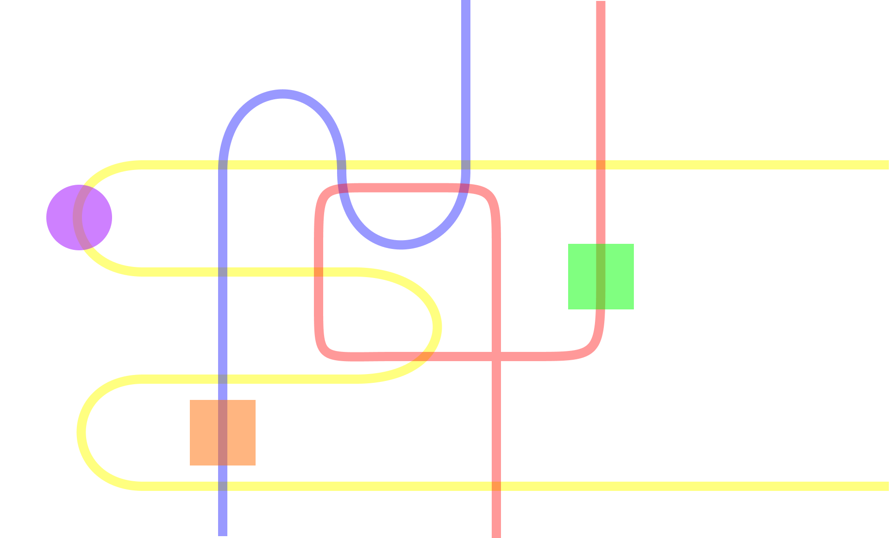

Projects

A project devoted to finding a clever way to gamify tourism of a city. Done in collaboration with Enschede Promotie
Skills: User Testing, Client Work, Projection Mapping

Playful Intelligence is a speculative design concept depicting what could be the interface with artificial intelligence for children.
Skills: Python, Co-Creation Workshops, Electronics

Garden is a personal relationship manager (PRM) centered around maintenance of quality relationships so that they may flourish.
Current Status: Learning mobile development so this project can continue to grow
Skills: Blender, Figma, Flutter